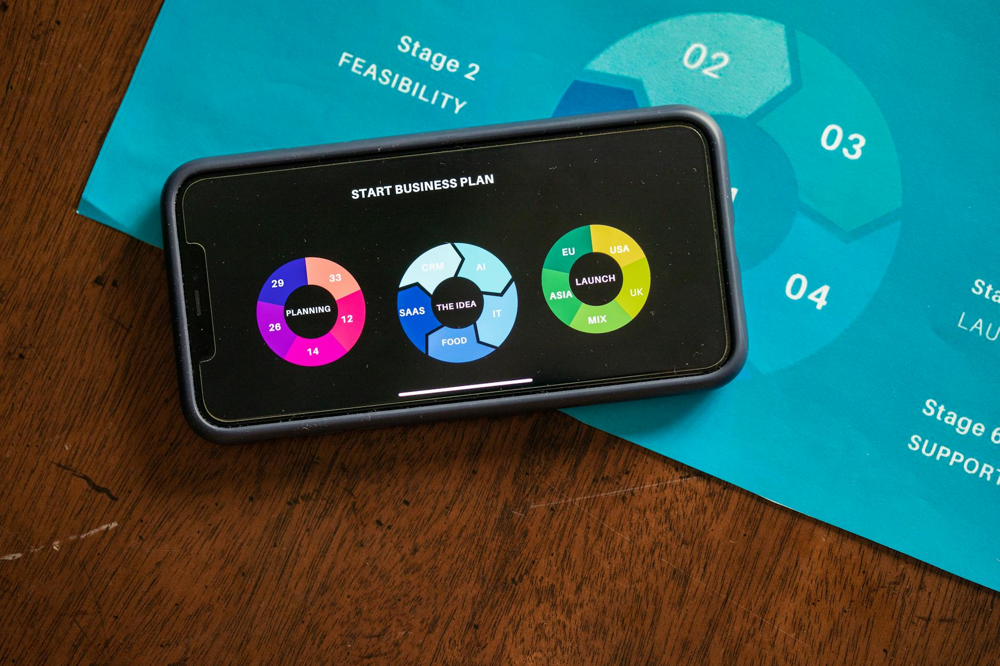
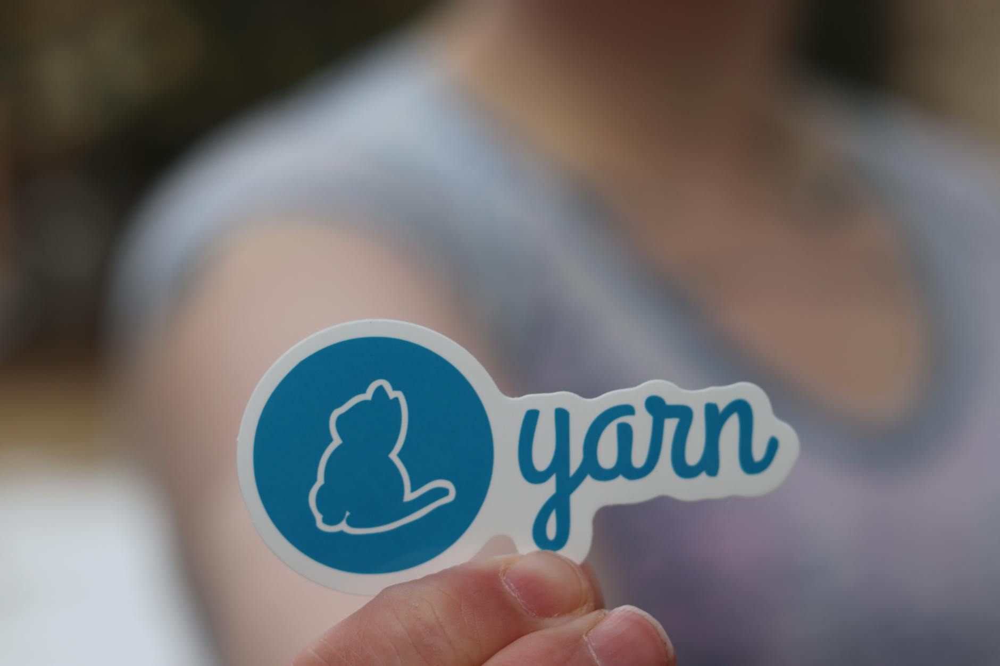

TL;DR
Busy professionals can find time for side hustles by reallocating 5 hours weekly. Focus on structured time management, avoiding common pitfalls like overcommitting. Utilize tools like Trello to streamline your efforts.
Busy Professionals Who Want to Start a Side Hustle
Many busy professionals dream of starting a side hustle but feel suffocated by their daily responsibilities. If you’re juggling a full-time job, family commitments, and personal errands, the thought of adding something else can feel overwhelming.
The reality is that side hustles can provide additional income and personal fulfillment, but misconceptions around time scarcity often hold you back.
For instance, nearly 60% of professionals say they lack the time to devote to side projects, even though a structure can help allocate just a fe
Why Time Scarcity Myths Derail Your Ambitions

### Why Time Scarcity Myths Derail Your Ambitions
Many individuals operate under the belief that they simply lack the time to embark on a side hustle, yet this mindset can severely limit their potential.
While it’s common to hear advice about allocating time effectively, more profound issues often lurk beneath the surface, such as poor time management strategies and the prevalence of unexpected distractions.
For instance, a recent study showed that professionals on average spend over 15 hours each week on non-essential tasks: this includes browsing social media for an hour a day, which adds up to over seven hours a week, or attending meetings that could have been emails, costing an estimated three hours weekly.
Instead of creating a structured schedule that promotes efficiency, many find themselves stuck in a cycle of perceived busyness. Take Sarah, for example, a marketing manager with a passion for photography.
She tends to spend over two hours daily scrolling through social media, often losing track of time while juggling work responsibilities. After assessing her day, she realizes that these wasted hours could be redirected toward her side hustle.
By limiting her social media use to just 30 minutes a day, she frees up over 10 hours weekly—enough for her to focus on developing her photography portfolio.
A Step-by-Step Time Allocation Framework
A structured time management plan is paramount for busy professionals wanting to launch a side hustle. Consider the following framework: 1. Assess Your Current Schedule: Track how you spend your time for a week to identify gaps. 2. Define Commitment Levels: Decide how many hours weekly you can realistically dedicate. A common starting point is 5 hours. 3. Create Time Blocks: Segment your week into blocks, such as 1-hour slots on Tuesday and Thursday evenings. 4. Set Specific Goals: Identify tasks for each block, whether it’s research, marketing, or networking. 5. Review & Adjust: Weekly, evaluate what worked and refine your schedule.
A Practical Scenario: Freelance Writing Commitment

### A Practical Scenario: Freelance Writing Commitment
Imagine you've decided to embark on a freelance writing side hustle, allocating 5 hours each week to this endeavor. Here’s a detailed breakdown of how you could effectively manage your time over the course of a month, alongside some real-world examples.
Week 1: Start by dedicating 2 hours to research niche topics relevant to industries that interest you, such as tech, health, or lifestyle. Use tools like Google Trends or niche-specific forums to identify trending subjects.
The remaining 3 hours can be spent creating a polished portfolio, featuring 3-5 writing samples. For instance, if you write a compelling article on "The Benefits of Remote Work" and another on "Top 10 Health Apps," you'll have engaging content to showcase to potential clients.
Week 2: In this week, focus on applying for gigs on platforms such as Upwork or Freelancer. Spend 2 hours crafting tailored proposals for at least five jobs that match your skill set; even a single successful pitch can lead to projects worth $200 or more.
With the remaining 3 hours, begin drafting your initial articles. If one job requires a 1,000-word piece on "Sustainable Living Practices," dedicate time to outline, research, and write the first draft.
Week 3: Allocate 2 hours to edit and submit your completed articles, ensuring they meet the client's guidelines and showcase your best work.
Editing is crucial; a well-polished piece can lead to repeat business. Use the other 3 hours to market yourself on LinkedIn. Optimize your profile to reflect your freelance expertise and post updates about your writing journey, which can help attract potential clients through networking.
Week 4: Spend the entire 5 hours evaluating your success and making necessary adjustments to your strategies. Look at metrics like response rates to your proposals, the time taken to complete projects, and client feedback.
Common Mistakes and Tradeoffs in Time Allocation
### Common Mistakes and Tradeoffs in Time Allocation
As you embark on your side hustle journey, several common mistakes can derail your progress. One prevalent error is overcommitting. For instance, you might aim to invest 10 hours weekly into your side hustle, believing that your enthusiasm will fuel that effort.
However, if you can realistically allocate only 5 hours without compromising your well-being or primary job, you risk burnout and frustration.
Another common mistake is underestimating the time required for crucial tasks. For example, if you anticipate that drafting a proposal will take only an hour, but you find that gathering relevant information, refining your narrative, and formatting the document adds an additional 2 hours, you’re left scrambling to meet deadlines.
This miscalculation not only affects current projects but can also damage your reputation if clients receive late or subpar work.
The tradeoff here is between immediate results and the longer-term growth of your side hustle. Many professionals expect to see outcomes quickly—such as landing their first client or hitting a revenue target—but this can lead to disappointment.
For example, a freelance graphic designer may hope to secure three clients in their first month, but building a portfolio, networking, and understanding client needs often takes longer than anticipated.
To navigate these potential pitfalls, develop a detailed project timeline with realistic deadlines for each task. If you estimate that client feedback will take a week to receive and adjust your work accordingly, allocate buffer time—a week for revision, in addition to the initial draft time.
This way, you can accommodate unexpected delays without throwing off your overall schedule.
Essential Tools for Side Hustle Efficiency
Finally, integrating the right tools can make your side hustle journey more efficient. Products like Trello or Asana help manage tasks, while Toggl can track your time allocation.
Apps like Slack or Zoom facilitate communication with clients. The right toolset ensures you’re maximizing productive hours. For example, using Trello to visualize task completion brings clarity and reduces overwhelm.
FAQ
How much time should I dedicate to my side hustle?
Start with just 5 hours weekly, gradually increasing as you become more comfortable with your schedule.
What tools can help me manage my side hustle better?
Tools like Trello for task management and Toggl for time tracking are highly effective.
This article has been reviewed for practical usefulness and updated to reflect current tools and strategies.
Next step
Use the article as a decision point, not just reading material. Your next system matters more than more browsing.
Search more articles
Find related tools, workflows, and guides.
Photo credits
- Photo 1: Soly Moses via Pexels
- Photo 2: RDNE Stock project via Pexels
- Photo 3: Jean-Paul Wettstein via Pexels
- Photo 4: RealToughCandy.com via Pexels
- Photo 5: fauxels via Pexels